sequenceDiagram
participant Maquinari
participant Virtualització
participant Contenidors
participant DevOps
participant IaC as Infraestructura com a Codi
participant FaaS as Funcions com a Servei
rect rgb(255, 255, 204)
Note over Maquinari: 1. Configuració Tradicional
Maquinari->>Maquinari: L'administrador es centra en el hardware
end
rect rgb(204, 255, 204)
Note over Maquinari,Virtualització: 2. Virtualització
Maquinari->>Virtualització: Aïllament de S.O.
end
rect rgb(204, 255, 255)
Note over Maquinari,DevOps: 3. Contenidors i DevOps
Virtualització->>Contenidors: Aïllament d'aplicacions
Contenidors->>DevOps: Faciliten el desplegament continu
end
rect rgb(255, 204, 255)
Note over Maquinari,IaC: 4. Infraestructura com a Codi (IaC)
DevOps->>IaC: Automatització total de la infraestructura
end
rect rgb(255, 204, 204)
Note over Maquinari,FaaS: 5. Funcions com a Servei (FaaS)
IaC->>FaaS: Abstracció completa de la plataforma
end
Fonaments de l’Administració de Sistemes
Unitat 1 · Administració i Manteniment de Sistemes i Aplicacions (AMSA)
Jordi Mateo Fornés
Introducció al curs
Benvinguda

Administració i Manteniment de Sistemes i Aplicacions (AMSA)
1r Semestre, 3r Curs del Grau en Enginyeria Informàtica. Impartida per Jordi Mateo, professor del Departament d’Enginyeria Informàtica i Disseny Digital (DEIDD).

Què és l’Administració de Sistemes?
Què és l’Administració de Sistemes?

L’administració de sistemes és la disciplina tècnica que implica la configuració, la gestió, la supervisió i el manteniment continu d’infraestructures informàtiques (servidors, xarxes, emmagatzematge de dades, programari, seguretat, etc.), per garantir la seva disponibilitat, rendiment, seguretat i funcionalitat, amb l’objectiu de satisfer les necessitats operacionals i estratègiques de l’organització.
Què és un administrador?
Un administrador és una persona que té cura, gestiona o dirigeix els béns o els interessos d’una altra persona o entitat. En aquest cas, configurar, gestionar, supervisar i mantenir sistemes informatics.
Què és un sistema?
Un sistema és un conjunt d’elements interconnectats que treballen junts per aconseguir un objectiu comú. El Sistema Informàtic està format per hardware, programari, dades, xarxes, persones, etc., que treballen junts per processar informació.
Quines són les métriques a garantir?
- Disponibilitat: Capacitat d’un sistema per estar operatiu i accessible als usuaris en tot moment.
- Rendiment: Mesura de l’eficiència amb què un sistema utilitza els recursos disponibles per executar tasques.
- Seguretat: Capacitat d’un sistema per protegir les dades i recursos contra accessos no autoritzats, atacs i pèrdues.
- Funcionalitat: Conjunt de característiques i capacitats que un sistema ofereix per complir amb els requisits operatius i les necessitats dels usuaris.
Quines són les necessitats a satisfer?
- Necessitats Operacionals: Requisits i objectius relacionats amb l’execució diària i el funcionament eficient dels sistemes, com ara la disponibilitat, el rendiment i la seguretat.
- Necessitats Estratègiques: Objectius i metes a llarg termini de l’organització, com ara la innovació, la competitivitat i l’adaptabilitat o la escalabilitat dels sistemes.
Millorant la definició feta per ChatGPT
L’administració de sistemes és la disciplina tècnica que implica la configuració, gestió, supervisió i manteniment continu d’infraestructures informàtiques (servidors, xarxes, emmagatzematge de dades, programari, seguretat, etc.)
així com la coordinació de les persones usuàries, polítiques, procediments i dades associades
per garantir la disponibilitat, rendiment, seguretat i funcionalitat del sistema, amb l’objectiu de satisfer les necessitats operacionals i estratègiques de l’organització en conjunt.
Analogia amb Matrix
Quants de vosaltres heu vist la pel·lícula Matrix? Què té a veure amb l’Administració de Sistemes?

Evolució
Sortides Professionals
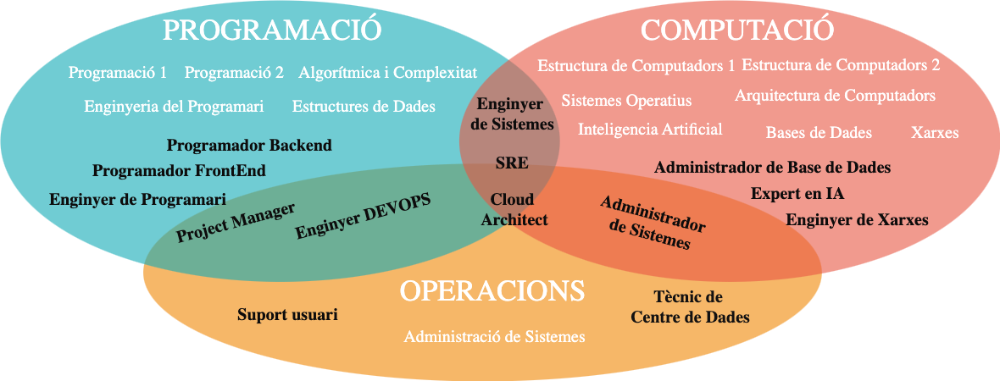Objectius del curs
- Introduir-vos en el món de l’administració de sistemes i aplicacions, així com en la seva gestió i manteniment.
- Repasar llenguatges de programació i scripting per a l’automatització de tasques. Bash, AWK, YAML, que ens permetran utilitzar eines com Ansible, AWS CloudFormation, Docker, Kubernetes, etc.
- Apendre a gestionar, configurar i monitoritzar servidors en entorns físics i virtuals.
- Introduir-vos en el món del Cloud Computing i les seves principals plataformes (AWS, Azure, Google Cloud).
- Desplegar serveis Web, Bases de Dades, Aplicacions i Infraestructures en diferents entorns.
Metodologia
- Teoria: En aquestes sessions, es presentaran els continguts teòrics de l’assignatura, que es complementaran amb exemples il·lustratius. Com a material de suport, s’utilitzaran les diapositives de l’assignatura.
- Pràctiques: Aquestes sessions es basen en una metodologia activa i asincrònica que permet a cada estudiant o grup avançar al seu ritme. El contingut és autosuficient, i la funció del professor és fomentar el debat i ajudar a resoldre dubtes.
- Treball autònom: Aquesta part del curs implica la finalització dels laboratoris i l’elaboració d’informes a partir dels reptes proposats. També inclou la lectura i visualització de documentació tècnica; així com la realització d’activitats al cloud AWS.
Planificació Part I
| Set. | Dilluns | Dimecres |
|---|---|---|
| 1a | - | U1: Fonaments de l’Administració |
| 2a | U2: Procés d’Arrencada i Inicialització del Sistema | U2: Procés d’Arrencada i Inicialització |
| 3a | U2: Procés d’Arrencada i Inicialització del Sistema | U2: Procés d’Arrencada i Inicialització |
| 4a | U3: Sis. de Fitxers i Emmagatzematge | U3: Sis. de Fitxers i Emmagatzematge |
| 5a | U3: Sis. de Fitxers i Emmagatzematge | U3: Sis. de Fitxers i Emmagatzematge |
| 6a | U3: Sis. de Fitxers i Emmagatzematge | U4: Autenticació i Autorització |
| 7a | U4: Autenticació i Autorització | U4: Autenticació i Autorització |
| 8a | Workshop | Workshop |
| 9a | PARCIALS |
Planificació Part II
| Set. | Dilluns | Dimecres |
|---|---|---|
| 10a | U5: Virtualització | U5: Virtualització |
| 11a | U5: Virtualització | U5: Virtualització |
| 12a | U6: Computació en el Núvol | U6: Computació en el Núvol |
| 13a | U6: Computació en el Núvol | U6: Computació en el Núvol |
| 14a | - | U7: Orquestració i CI/CD |
| 15a | Workshop | Workshop |
| 16a | PARCIALS | |
| 17a | ||
| 18a | ||
| 19a | RECUPERACIONS |
Avaluació
Criteris d’Avaluació
| Activitat | Pes | Recuperable? | Nota Mínima? | Grup? |
|---|---|---|---|---|
| Examen 1 | 35% | Sí | No | No |
| Examen 2 | 35% | Sí | No | No |
| Laboratori | 20% | No | Sí | Sí |
| Activitats Async | 5% | No | No | No |
| Seguiment i participació | 5% | No | No | No |
Exàmens
Els exàmens parcials (E1 i E2) són proves escrites que avaluen els coneixements teòrics i pràctics adquirits durant el curs.
- Són proves individuals i presencials.
- Es realitzaran en les dates establertes al calendari acadèmic.
- No es permet l’ús de cap dispositiu electrònic (telèfons mòbils, ordinadors portàtils o tauletes).
- Si es permet l’ús d’un resum de continguts, que ha de ser un document escrit a mà i no pot excedir una fulla DIN A4 (per davant i per darrere).
Recuperació
- Els parcials són recuperables mitjançant proves escrites addicionals que es realitzaran durant la setmana de recuperació.
- Si un estudiant necessita recuperar un únic parcial (E1 o E2), podrà fer una prova específica per a aquest parcial. La qualificació obtinguda en aquesta recuperació substituirà la nota del parcial corresponent.
- Si un estudiant necessita recuperar ambdós parcials, haurà de realitzar dues proves separades, una per a cada parcial (E1 i E2). Les qualificacions obtingudes en cadascuna d’aquestes proves de recuperació substituiran les notes originals dels parcials respectius.
- És important notar que no hi haurà un model d’examen unificat per a la recuperació; cada prova de recuperació se centrarà exclusivament en els continguts del parcial al qual correspon.
Pràctiques
- Les pràctiques de l’assignatura impliquen treball fora de l’aula i s’han de lliurar de forma estricta en les dates establertes.
- La seva avaluació es farà mitjançant rúbriques de correcció, que estaran disponibles per als estudiants amb antelació.
- El professorat pot entrevistar els estudiants per verificar l’autoria. Si es detecta que una activitat no ha estat realitzada per l’estudiant la seva qualificació serà 0.
- Qualsevol entrega fora del termini establert es considerarà no vàlida i es qualificarà amb un 0.
- Cadascuna pot tenir una ponderació específica indicada a la descripció de l’activitat.
- Aquestes pràctiques no són recuperables.
- Tot i ser activitats en grup, cada estudiant pot obtenir una nota diferent en funció de la seva participació i aportacions individuals al grup.
Activitats Asíncrones a AWS
Aquestes activitats asíncrones es realitzaran a la plataforma AWS al llarg del curs. La seva finalitat és que completis totes les activitats i laboratoris proposats, ja que la qualificació es basarà íntegrament en la finalització d’aquests. Completar totes les tasques et donarà el 5% de la nota final. Si en fas només una part, la puntuació serà proporcional a les activitats que hagis realitzat.
- No recuperable: Aquesta activitat no disposa de recuperació.
- Data límit: La data màxima per a la presentació i finalització és el dia de l’E2.
- Valor afegit: Obtenció d’un certificat oficial AWS.
Seguiment i Participació
Rúbrica d’Avaluació
| Punts | Participació Presencial | Participació en Fòrums | Activitats Sessió |
|---|---|---|---|
| 10 | Contribucions excepcionals,enriqueix la discussió. | Líder en discussions, promou debat. | Qualitat excepcional, supera expectatives. |
| 9 | Comentaris rellevants, mostra comprensió, escolta activament. | Respostes significatives. | Alta qualitat, treball precís. |
| 8 | Contribucions regulars, interactua amb companys. | Publicacions rellevants, contribueix constructivament. | Compleix tots requisits amb precisió. |
| 7 | Participa amb una comprensió bàsica. | Compleix mínims, contribucions breus. | Qualitat inconsistent però acceptable. |
| 5-6 | Poca freqüència, comentaris superficials. | Publicacions rares, poc profundes. | Algunes activitats incompletes. |
| 1-4 | Només participa si se li demana. | Publicacions irrellevants. | Rarament completa activitats. |
| 0 | Evita participar, distret. | Publicacions fora de tema. | No lliura activitats. |
L’assistència passiva no es puntua.
Bonus 1
- Objectiu: Fomentar la reflexió i l’autoavaluació dels continguts treballats a classe.
- Metodologia: Cada setmana, els estudiants han de fer un commit al seu repositori d’apunts amb les notes de les sessions de teoria i pràctiques.
- Avaluació: Es valorarà la qualitat de les notes, la seva coherència i la seva relació amb els continguts treballats, així com les reflexions i opinions personals incloses.
- Per participar cal crear un repositori a Github (públic) i fer-me arribar l’enllaç.
Bonus 2
- Els materials són Open Source.
- Qualsevol estudiant pot detectar errors, millorar els materials o afegir continguts nous.
- S’avaluarà la quantitat i qualitat.

Normativa del curs
Gestió del curs
- Es demana que els estudiants arribin puntuals a les sessions. L’entrada tardana pot interrompre la dinàmica de la classe i el treball dels companys.
- Es demana que els estudiants respectin les normes de convivència i respecte mutu durant les sessions de classe. Això inclou evitar interrupcions innecessàries, escoltar activament als companys i al professor, i mantenir un ambient de treball positiu i constructiu.
Comunicació amb el professorat
- Intenteu comunicar-vos a través del correu electrònic i no per l’eina del campus virtual per assegurar una resposta més ràpida.
- Les sessions de tutoria es realitzaran de manera presencial o virtual, segons les necessitats dels estudiants. És important que els estudiants sol·licitin cita prèvia per a les tutories utilitzant el correu electrònic jordi.mateo@udl.cat indicant el motiu de la consulta i la disponibilitat horària i afegint l’assumpte [AMSA]: Sol·licitud de Tutoria.
Treball individual
- Cada estudiant és responsable de la seva pròpia feina i de com gestiona el seu temps.
- L’assistència a classe no és obligatòria.
- Cada alumne ha de presentar evidències pròpies del treball realitzat, encara que es col·labori en grup.
Ús de la IAG
- Pots utilitzar eines d’IAG per generar idees, entendre conceptes complexos o esbossar l’estructura inicial del teu codi o projecte. No obstant això, la implementació i la versió final han de ser sempre de la teva autoria.
- Està estrictament prohibit presentar codi o solucions generades directament per una IAG com a treball propi (és a dir, mitjançant un simple copiar i enganxar).
- Si incorpores material assistit per una IAG, has de declarar-ho explícitament. Això implica identificar clarament les seccions generades per IAG i proporcionar el prompt exacte utilitzat per crear-les.
L’incompliment d’aquestes directrius es considerarà una violació de la integritat acadèmica.
- Qualificació de zero en la tasca.
- Conseqüències disciplinàries que estableix la Normativa de Convivència de la UdL per frau acadèmic.
Eines
- Ordinador portàtil amb connexió a Internet.
- Es recomana portar el vostre propi ordinador per cursar l’assignatura.
- Si no disposeu d’ordinador, podreu utilitzar els ordinadors de la classe durant les sessions de laboratori.
- Distribucions Linux (Debian i AlmaLinux)
- És obligatori utilitzar les distribucions indicades als laboratoris. Altres distribucions no rebran suport.
- Software de virtualització (VMWare i QEMU)
- Es recomana utilitzar VMWare i QEMU, però podeu optar per altres opcions de virtualització. Heu de ser capaços d’adaptar el material al vostre programari de virtualització.
- Compte a AWS
Materials i Recursos
- Apunts de l’assignatura i materials proporcionats pel professor.
- Documentació oficial de les eines i tecnologies utilitzades.
- Fòrums tècnics a la xarxa com Stack Overflow, Reddit, etc
- Llibres de referència en administració de sistemes:
- “UNIX and Linux System Administration Handbook” de Evi Nemeth, Garth Snyder, Trent R. Hein, Ben Whaley.
- “The Practice of System and Network Administration” de Thomas A. Limoncelli, Christina J. Hogan, Strata R. Chalup.
La feina de l’administrador de sistemes
El rol de l’administrador de sistemes - Similituds amb un bomber
Els administradors de sistemes han de tenir coneixements tècnics profunds i una actitud proactiva per anticipar problemes i, si cal, resoldre’ls sota pressió, tal com ho faria un bomber en una emergència.
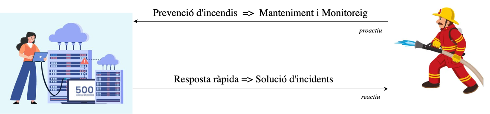
El rol de l’administrador de sistemes - Similituds amb un científic
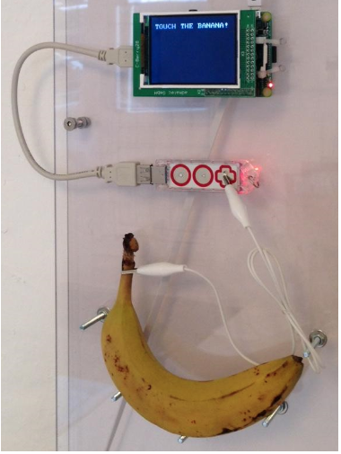
- Els administradors de sistemes han de ser capaços de resoldre problemes complexos i trobar solucions creatives.
- Això pot ser semblant al treball d’un científic, que ha de plantejar hipòtesis, realitzar experiments i analitzar dades per arribar a conclusions.
- Per exemple, una empresa pot necessitar donar codis d’accés temporals als usuaris per connectar-se a la xarxa Wifi. En lloc de gestionar-ho manualment, un administrador de sistemes va crear un sistema que generava codis d’accés temporals quan els usuaris tocaven un platan connectada a un Raspberry Pi.
Salari Administrador de Sistemes
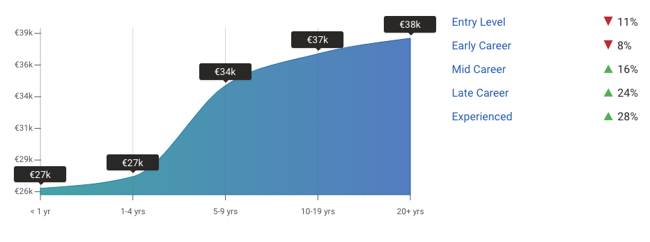

Especialitzacions en Administració de Sistemes
- Administradors de Xarxa, Enmagatzematge, Seguretat
- Operadors de Xarxa
- Arquitectes de Sistemes
- Tècnics de Suport
- Tècnics de Centre de Dades
- Enginyers de Sistemes
- Enginyer DEVOPS
- Enginyer SRE (Site Reliability Engineer)
Què és un Site Reliability Engineer (SRE)?
Els Site Reliability Engineers (SRE) són enginyers de sistemes especialitzats en la fiabilitat i l’escalabilitat dels sistemes informàtics. Estan centrats en les operacions, utilitzant el software com a eina per gestionar els sistemes, solucionar els afers i automatitzar tasques. Les seves missions són crear sistemes escalables i fiables.
- Fiabilitat del Sistema: Nagios, Zabbix, Prometheus.
- Escalabilitat: Kubernetes, Docker, Terraform.
- Monitorització i Alertes: Grafana, ELK Stack, PagerDuty.
- Gestió d’Incidents: Jira, ServiceNow, Slack.
- Optimització de Rendiment: New Relic, Datadog, AppDynamics.
- Automatització de Processos: Ansible, Puppet, Chef.
Salari d’un Site Reliability Engineer
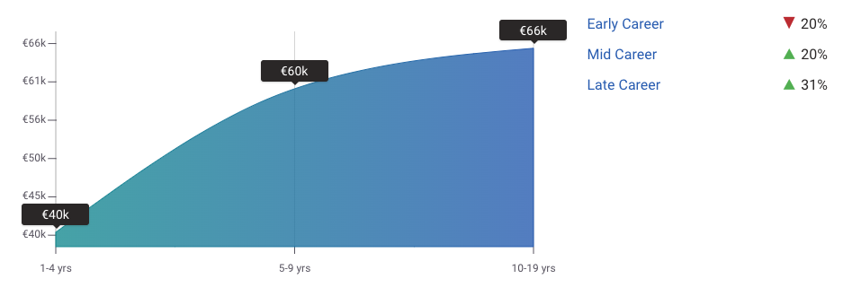

Què és un DevOps Engineer?
Els DevOps Engineers són professionals clau en la integració i col·laboració entre els equips de desenvolupament (Dev) i operacions (Ops), amb l’objectiu principal de millorar l’eficiència i agilitat dels processos de desenvolupament de software. El seu treball se centra en accelerar el desplegament d’aplicacions, millorar la qualitat del software i optimitzar els fluxos de treball, fent ús intensiu de l’automatització, la integració contínua (CI) i el lliurament continu (CD).
- Automatització: Jenkins, GitLab CI, Bamboo.
- Gestió d’infraestructura com a codi (IaC): Terraform, Ansible, CloudFormation.
- Contenidors i orquestració: Docker, Kubernetes.
- Monitorització i registre: Prometheus, Grafana, ELK Stack.
- Col·laboració i comunicació: Slack, Jira, Confluence.
Salari d’un DevOps Engineer


Transfomració del Administrador de Sistemes a SRE

Damon Edwards, co-fundador de Rundeck, parla de la transformació d’un administrador de sistemes a un Site Reliability Engineer (SRE) i com aquesta evolució pot ajudar a millorar la fiabilitat dels sistemes i la productivitat dels equips de desenvolupament. Aquesta xerrada va ser presentada a la DevOpsCon 2019.
Terminologia bàsica
Arquitectura Client-Servidor
Una arquitectura client-servidor involucra uns sistemes que necessiten serveis i uns servidors que processen i responen a aquestes peticions.
Client
Un ordinador o dispositiu capaç de rebre informació o utilitzar un servei o proveïdor.
Servidor
Un ordinador o dispositiu remot capaç de proveir accés a un servei o a informació.

Característiques Client-Servidor
Avantatges
- Sistema centralitzat Totes les dades en un lloc.
- Polítiques de recuperació de dades.
- Separació de la lògica.
Inconvenients
- Atacs de denegació de serveis.
- Man-in-the-middle.
- Phishing.
- Spoofing.
Servidors més comuns
- Servidor d’autenticació.
- Servidor de fitxers.
- Servidor de discos.
- Servidor de correu.
- Servidor de base de dades.
- Servidor SSH.
- Servidor Web.
- Servidor d’aplicacions.
- Servidor de backups.
- Servidor de còmput.
Exemple d’arquitectura escalable
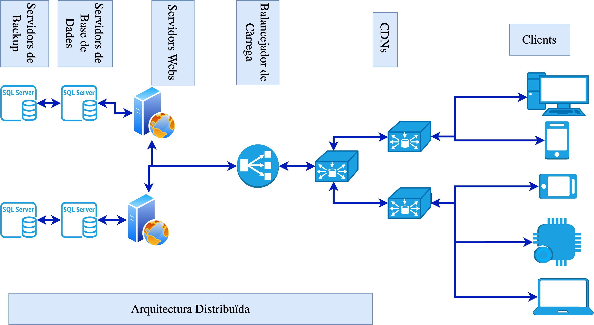
Problemes més comuns servidors (I)
- Qui i com accedeix a la informació?
- Determinar qui (usuari,procés,servei) pot accedir a quins fitxers i directoris i com ho pot fer (lectura, escriptura, execució).
- Permisos, ACLs, polítiques de seguretat.
- Com protegeixo la informació?
- Determinar com protegir la informació sensible i confidencial.
- Encriptació, contrasenyes, autenticació, autorització, auditoria, backups.
- Com asseguro el sistema?
- Protegir el sistema contra atacs i amenaces.
- Firewall, IDS/IPS, antivirus, actualitzacions, patches, hardening.
Problemes més comuns servidors (II)
- Com puc saber si el client és qui diu ser?
- Autenticar els usuaris i els dispositius.
- Contrasenyes, certificats digitals, autenticació multifactorial.
- Quins avantatges/inconvenients té un disseny respecte a un altre?
- Determinar quin disseny és més adequat per a les necessitats de l’empresa.
- Escalabilitat, rendiment, seguretat, disponibilitat, fiabilitat.
- Com asseguro el bon funcionament?
- Garantir que el sistema funcioni correctament i sense problemes.
- Monitorització, alertes, backups, redundància, tolerància a fallades.
Problemes més comuns servidors (III)
- Com dissenyo polítiques i plans d’emergència si tot falla?
- Preparar-se per a situacions d’emergència i desastres.
- Plans de contingència, plans de recuperació, plans de resposta a incidents.
- Com analitzo post-mortem les causes d’un atac?
- Identificar les causes d’un atac i prendre mesures correctives.
- Anàlisi forense, auditoria, millora contínua.
Què és un centre de dades?
És una instal·lació que allotja un conjunt de servidors i equipament de xarxa (recursos heterogenis) per proporcionar recursos informàtics a diverses aplicacions i serveis (càrregues de treball diverses).
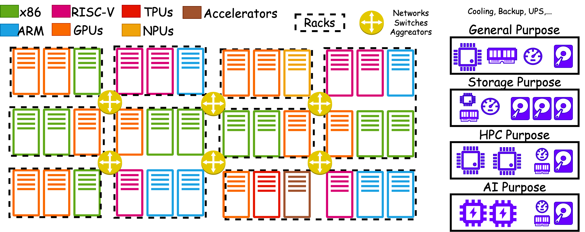
Què és un rack?
Un rack és una estructura metàl·lica que allotja servidors, switches, routers i altres equips informàtics en un centre de dades.

Exemple de racks
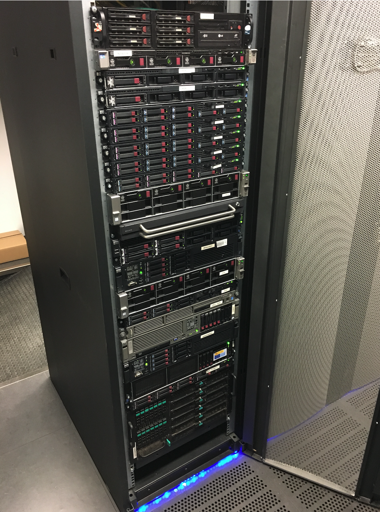
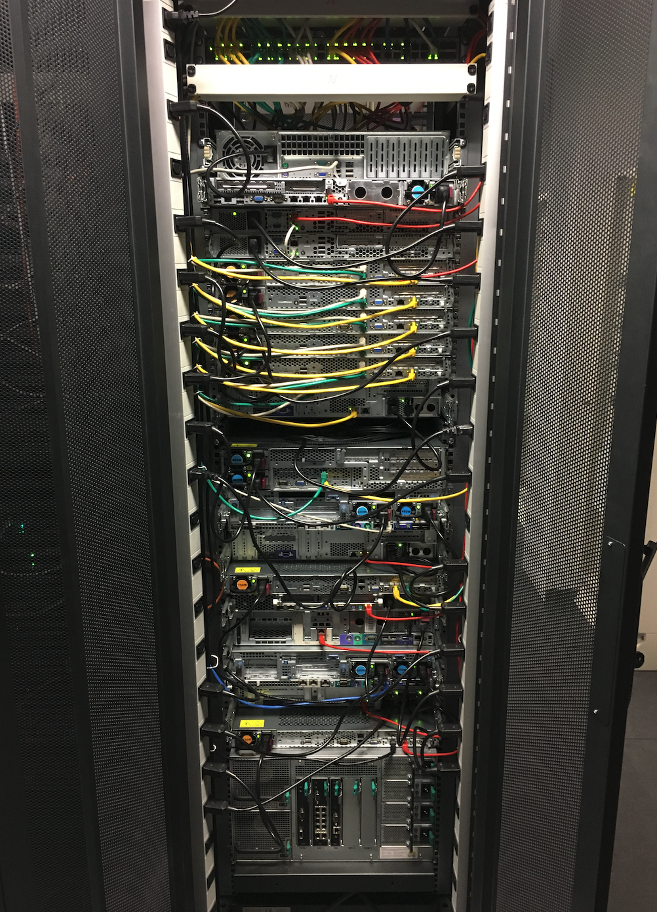
Exemple de servidor

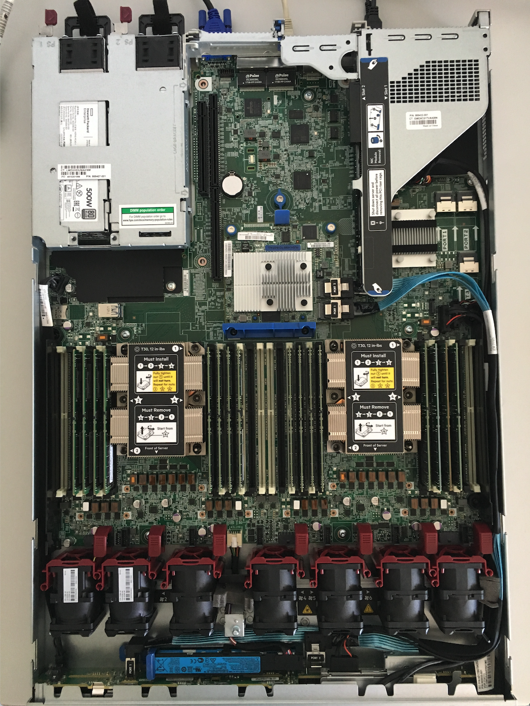
Què és un switch?
Un switch és un dispositiu de xarxa que connecta diversos equips informàtics per permetre la comunicació entre ells.
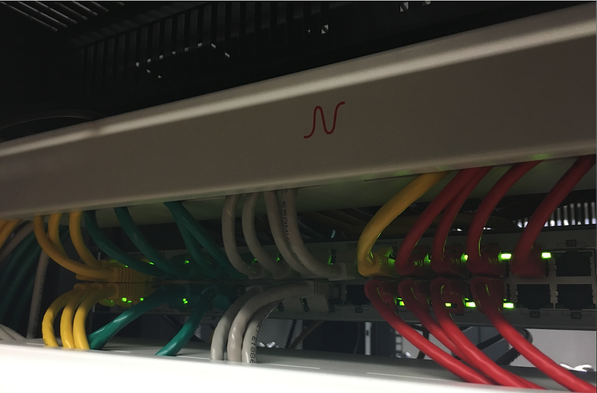
Disseny de sistemes informàtics
Característiques d’un sistema
- Simplicitat
- Escalabilitat
- Seguretat
- Fiabilitat
- Disponibilitat
- Rendiment
- Facilitat d’ús
Què és l’escalabilitat?
L’escalabilitat és la capacitat d’un sistema per gestionar un augment de la càrrega de treball sense afectar el rendiment.
- Vertical: augmentar la capacitat d’un servidor afegint més recursos (CPU, memòria, disc).
- Horitzontal: augmentar la capacitat d’un sistema afegint més servidors.
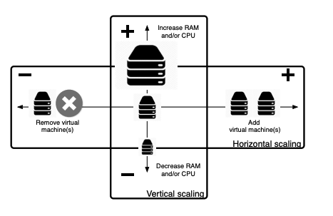
Exemple
El serveis al núvol permeten pagar només pel que s’utilitza, permetent augmentar o disminuir la capacitat segons les necessitats. Et permet estirar els recursos tecnològics com un globus d’aire calent, augmentant la capacitat quan és necessari i reduint-la quan ja no és necessari.
Què és la fiabilitat?
La fiabilitat d’un sistema es refereix a la seva capacitat per operar sense interrupcions durant un període determinat. La fiabilitat es mesura habitualment mitjançant el MTBF (Mean Time Between Failures), que indica el temps mitjà que un sistema pot funcionar abans de fallar. Per exemple, si un sistema té un MTBF de 1000 hores, això vol dir que, de mitjana, es pot esperar que el sistema falli cada 1000 hores d’ús.
\[ MTBF = \frac{Temps\ total\ de\ funcionament}{Nombre\ de\ fallades} \]
Per millorar la fiabilitat i minimitzar les interrupcions, es poden implementar tècniques com la redundància. Un exemple comú és l’ús de servidors en configuració de calent i fred:
- Servidor en calent: És el servidor principal que està en funcionament i gestionant les operacions actuals.
- Servidor en fred: És un servidor de reserva que es manté en espera i es posa en marxa només quan el servidor en calent falla.
Què és la disponibilitat?
La disponibilitat d’un sistema es refereix a la seva capacitat per estar operatiu i accessible per als usuaris durant un període de temps determinat.
La disponibilitat es mesura habitualment mitjançant el MTTR (Mean Time To Repair), que indica el temps mitjà que es triga a reparar un sistema després d’una fallada. Per exemple, si un sistema té un MTTR de 2 hores, això vol dir que, de mitjana, es triga 2 hores a reparar el sistema després d’una fallada.
\[ Disponibilitat = \frac{Temps\ de\ funcionament}{Temps\ de\ funcionament + Temps\ de\ reparar} \]
Exemple
Amazon Web Services (AWS) ofereix un SLA (Service Level Agreement) del 99,99%, el que significa que el servei estarà disponible el 99,99% del temps. Si el servei no compleix aquest SLA, AWS ha de compensar els clients amb crèdits de servei.
KISS: Keep It Simple, Stupid
Un sistema simple és més fàcil de mantenir, gestionar i entendre. Per dissenyar un sistema simple, es poden seguir les següents pautes:
- Divideix i venceràs: Divideix el sistema en components més petits i senzills
- Minimitza la complexitat: Evita la complexitat innecessària i mantén el sistema senzill
- Utilitza estàndards: Utilitza estàndards i pràctiques comunes per simplificar el disseny
- Documenta el sistema: Documenta el sistema per facilitar la comprensió i el manteniment
- Automatitza les tasques repetitives: Utilitza la automatització per simplificar les tasques repetitives i reduir els errors humans
Exemple
Un sistema LEGO és un exemple de simplicitat, ja que es pot construir gairebé qualsevol cosa convinant peces senzilles. Aquesta simplicitat permet als usuaris crear i modificar les seves pròpies creacions sense necessitat de coneixements tècnics avançats.
Eines i tecnologies
Eines i tecnologies més comuns?
- Virtualització: Màquines Virtuals, Contenidors
- Cloud Computing: Infraestructura com a Servei (IaaS), Plataforma com a Servei (PaaS), Software com a Servei (SaaS)
- Automatització: Ansible, Puppet, Chef
- Infraestructura com a Codi: Terraform, CloudFormation
- Monitorització: Nagios, Zabbix, Prometheus
- CI/CD: Jenkins, GitLab CI
- Seguretat: PfSense, Suricata, Snort
- Bases de Dades: MySQL, PostgreSQL, MongoDB
- Serveis Web: Apache, Nginx, Tomcat
- Orquestació de Contenidors: Kubernetes, Docker Swarm
Virtualització (Màquines Virtuals)

Ansible
Ansible és una eina d’automatització de la configuració i gestió de sistemes. Utilitza un llenguatge senzill basat en YAML per definir les tasques i la configuració dels sistemes, i utilitza SSH per connectar-se als servidors i executar les tasques.
Què és el Cloud Computing?
Lliurament de recursos sota demanda, incloent servidors, emmagatzematge, bases de dades, programari, analítica, i més, a través d’internet amb un model de pagament per ús.
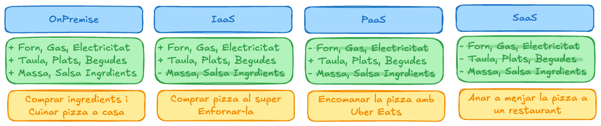
Amazon Web Services

CloudFormation
CloudFormation és un servei d’AWS que permet als desenvolupadors definir i desplegar la infraestructura de manera programàtica mitjançant codi.
Virtualització (Contenidors)

Kubernetes

That’s all
Take Home Message
Un administrador de sistemes combina habilitats de bomber i investigador: ha de solucionar problemes de manera ràpida i efectiva, però també anticipar-se i prevenir-ne de futurs abans que esdevinguin crítics. Aquesta tasca és complexa i diversa, abastant des de la gestió de cables i servidors físics fins a l’administració de pods i sistemes automàtics sense servidor (serverless).


Unitat 1 · Administració i Manteniment de Sistemes i Aplicacions (AMSA) 🏠